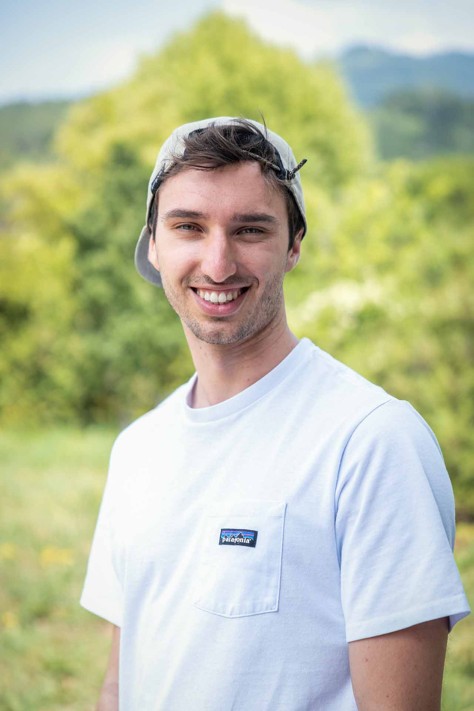

Lebenslauf

Summary
Ich liebe es, Probleme zu lösen, mich empathisch in User:innen hineinzuversetzen und Ästethik zu kreieren.
Keyfacts
- Julius Summer (geb. Tiefenthaler)
- am 04.04.1998 in Hohenems geboren
- Österreicher
- wohnhaft in Schlösslestraße 56a, 6832 Röthis
- sagjuliushallo@gmail.com
- +43 677 646 01644
Bildung
- 04/2021-dato: Studium Mediendesign an der IU Internationale Hochschule (6. Semester)
- 01-09/2020: Studium Wirtschaftspsychologie an der IUBH Internationale Hochschule (nicht abgeschlossen)
- 2012-2017: BHAK Bludenz mit Reife- und Diplomprüfung, Unternehmerprüfung
- 2008-2012: Hauptschule Sulz-Röthis
- 2004-2008: Volksschule Röthis
Beruflicher Werdegang
- 01-02/2024: Praktikum bei Digitalagentur Digit One GmbH
- 10-11/2023: Orientierungspraktikum Brockenhaus Sulz, Lebenshilfe Vorarlberg
- 2019-04/2024: Kaufmännischer Angestellter bei Rochini GmbH
- Sommer 2018: Zivildienst beim Sunnahof, Lebenshilfe Vorarlberg
- Sommer 2018: Zivildienst als Rettungssanitäter beim Roten Kreuz
- Winter 2017/18: Skilehrer in der Skischule Zürs
- Sommer 2016: Praktikum bei Gobiq Communication GmbH
EDV-Kenntnisse
- Adobe Creative Cloud: Gute Kenntnisse in Photoshop, Illustrator und InDesign
- Figma: Guter Umgang mit Komponenten und Prototypen
- Webentwicklung: Grundkenntnisse in HTML5, CSS3 und JavaScript mit großer Motivation, diese zu vertiefen
- Microsoft Office: Gute Kenntnisse
- WordPress: Grundkenntnisse im Pflegen einer Homepage auf Basis eines Kriesi Enfold Templates
- BMD: Gute Kenntnisse in der Anwendung der Warenwirtschaft
Weitere Ausbildungen
- 2024: Übungsleiter Sportklettern
- 2023-dato: Jugendleiterausbildung beim Alpenverein Österreich
- 2018: Rettungssanitäter
- 2017: Schneesportlehrer
- 2014: Schneesportlehrer Praktikant
Ehrenamt
- 2022-dato: Funktionär in der Alpenvereinsjugend im Bezirk Götzis
Hobbys
- Lesen
- Klettern
- Skitouren
- Gravelbiken
- Hochtouren
- Kochen
Röthis am 26. Juni 2024
Julius Summer